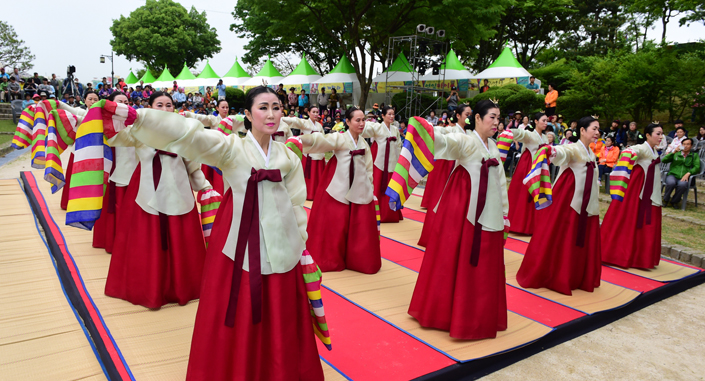

진주논개제
천년고도 진주는 예로부터 북평양 남진주라 불릴 정도로 전통예술이 뛰어난 고장으로 유명하다. 진주의 뜻있는 문화예술인들은 지역의 훌륭한 전통예술을 기반으로 임진왜란 당시 진주성에서 순국한 논개를 비롯한 7만 민, 관, 군의 충절과 진주정신을 포괄하면서 시민들이 동참할 수 있는 전통예술축제를 창제하기로 하고 그동안 별개의 행사로 각각 진행되어 오던『의암별제』와 『진주탈춤한마당』을 주축으로 하는 진주논개제를 만들었다.
천년고도 진주는 예로부터 북평양 남진주라 불릴 정도로 전통예술이 뛰어난 고장으로 유명하다. 진주의 뜻있는 문화예술인들은 지역의 훌륭한 전통예술을 기반으로 임진왜란 당시 진주성에서 순국한 논개를 비롯한 7만 민, 관, 군의 충절과 진주정신을 포괄하면서 시민들이 동참할 수 있는 전통예술축제를 창제하기로 하고 그동안 별개의 행사로 각각 진행되어 오던『의암별제』와 『진주탈춤한마당』을 주축으로 하는 진주논개제를 만들었다.